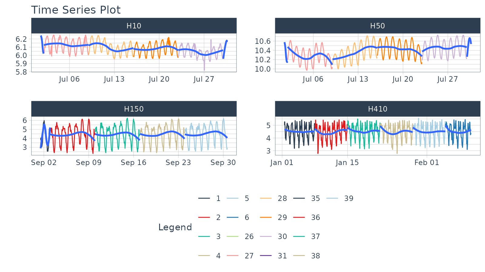

Visualizing Time Series
Matt Dancho
Source:vignettes/TK04_Plotting_Time_Series.Rmd
TK04_Plotting_Time_Series.Rmd
This tutorial focuses on, plot_time_series(), a
workhorse time-series plotting function that:
- Generates interactive
plotlyplots (great for exploring & shiny apps) - Consolidates 20+ lines of
ggplot2&plotlycode - Scales well to many time series
- Can be converted from interactive
plotlyto staticggplot2plots
Plotting Time Series
Let’s start with a popular time series, taylor_30_min,
which includes energy demand in megawatts at a sampling interval of
30-minutes. This is a single time series.
taylor_30_min
#> # A tibble: 4,032 × 2
#> date value
#> <dttm> <dbl>
#> 1 2000-06-05 00:00:00 22262
#> 2 2000-06-05 00:30:00 21756
#> 3 2000-06-05 01:00:00 22247
#> 4 2000-06-05 01:30:00 22759
#> 5 2000-06-05 02:00:00 22549
#> 6 2000-06-05 02:30:00 22313
#> 7 2000-06-05 03:00:00 22128
#> 8 2000-06-05 03:30:00 21860
#> 9 2000-06-05 04:00:00 21751
#> 10 2000-06-05 04:30:00 21336
#> # ℹ 4,022 more rowsThe plot_time_series() function generates an interactive
plotly chart by default.
- Simply provide the date variable (time-based column,
.date_var) and the numeric variable (.value) that changes over time as the first 2 arguments - When
.interactive = TRUE, the.plotly_slider = TRUEadds a date slider to the bottom of the chart.
taylor_30_min %>%
plot_time_series(date, value,
.interactive = interactive,
.plotly_slider = TRUE)
Plotting Groups
Next, let’s move on to a dataset with time series groups,
m4_daily, which is a sample of 4 time series from the M4
competition that are sampled at a daily frequency.
m4_daily %>% group_by(id)
#> # A tibble: 9,743 × 3
#> # Groups: id [4]
#> id date value
#> <fct> <date> <dbl>
#> 1 D10 2014-07-03 2076.
#> 2 D10 2014-07-04 2073.
#> 3 D10 2014-07-05 2049.
#> 4 D10 2014-07-06 2049.
#> 5 D10 2014-07-07 2006.
#> 6 D10 2014-07-08 2018.
#> 7 D10 2014-07-09 2019.
#> 8 D10 2014-07-10 2007.
#> 9 D10 2014-07-11 2010
#> 10 D10 2014-07-12 2002.
#> # ℹ 9,733 more rowsVisualizing grouped data is as simple as grouping the data set with
group_by() prior to piping into the
plot_time_series() function. Key points:
- Groups can be added in 2 ways: by
group_by()or by using the...to add groups. - Groups are then converted to facets.
-
.facet_ncol = 2returns a 2-column faceted plot -
.facet_scales = "free"allows the x and y-axis of each plot to scale independently of the other plots
m4_daily %>%
group_by(id) %>%
plot_time_series(date, value,
.facet_ncol = 2, .facet_scales = "free",
.interactive = interactive)Visualizing Transformations & Sub-Groups
Let’s switch to an hourly dataset with multiple groups. We can showcase:
- Log transformation to the
.value - Use of
.color_varto highlight sub-groups.
m4_hourly %>% group_by(id)
#> # A tibble: 3,060 × 3
#> # Groups: id [4]
#> id date value
#> <fct> <dttm> <dbl>
#> 1 H10 2015-07-01 12:00:00 513
#> 2 H10 2015-07-01 13:00:00 512
#> 3 H10 2015-07-01 14:00:00 506
#> 4 H10 2015-07-01 15:00:00 500
#> 5 H10 2015-07-01 16:00:00 490
#> 6 H10 2015-07-01 17:00:00 484
#> 7 H10 2015-07-01 18:00:00 467
#> 8 H10 2015-07-01 19:00:00 446
#> 9 H10 2015-07-01 20:00:00 434
#> 10 H10 2015-07-01 21:00:00 422
#> # ℹ 3,050 more rowsThe intent is to showcase the groups in faceted plots, but to
highlight weekly windows (sub-groups) within the data while
simultaneously doing a log() transformation to the value.
This is simple to do:
-
.value = log(value)Applies the Log Transformation -
.color_var = week(date)The date column is transformed to alubridate::week()number. The color is applied to each of the week numbers.
m4_hourly %>%
group_by(id) %>%
plot_time_series(date, log(value), # Apply a Log Transformation
.color_var = week(date), # Color applied to Week transformation
# Facet formatting
.facet_ncol = 2,
.facet_scales = "free",
.interactive = interactive)
Static ggplot2 Visualizations & Customizations
All of the visualizations can be converted from interactive
plotly (great for exploring and shiny apps) to static
ggplot2 visualizations (great for reports).
taylor_30_min %>%
plot_time_series(date, value,
.color_var = month(date, label = TRUE),
# Returns static ggplot
.interactive = FALSE,
# Customization
.title = "Taylor's MegaWatt Data",
.x_lab = "Date (30-min intervals)",
.y_lab = "Energy Demand (MW)",
.color_lab = "Month") +
scale_y_continuous(labels = scales::comma_format())Box Plots (Time Series)
The plot_time_series_boxplot() function can be used to
make box plots.
- Box plots use an aggregation, which is a key parameter defined by
the
.periodargument.
m4_monthly %>%
group_by(id) %>%
plot_time_series_boxplot(
date, value,
.period = "1 year",
.facet_ncol = 2,
.interactive = FALSE)Regression Plots (Time Series)
A time series regression plot,
plot_time_series_regression(), can be useful to quickly
assess key features that are correlated to a time series.
- Internally the function passes a
formulato thestats::lm()function. - A linear regression summary can be output by toggling
show_summary = TRUE.
m4_monthly %>%
group_by(id) %>%
plot_time_series_regression(
.date_var = date,
.formula = log(value) ~ as.numeric(date) + month(date, label = TRUE),
.facet_ncol = 2,
.interactive = FALSE,
.show_summary = FALSE
)Summary
Timetk is part of the amazing Modeltime Ecosystem for time series forecasting. But it can take a long time to learn:
- Many algorithms
- Ensembling and Resampling
- Machine Learning
- Deep Learning
- Scalable Modeling: 10,000+ time series
Your probably thinking how am I ever going to learn time series forecasting. Here’s the solution that will save you years of struggling.
Take the High-Performance Forecasting Course
Become the forecasting expert for your organization
High-Performance Time Series Course
Time Series is Changing
Time series is changing. Businesses now need 10,000+ time series forecasts every day. This is what I call a High-Performance Time Series Forecasting System (HPTSF) - Accurate, Robust, and Scalable Forecasting.
High-Performance Forecasting Systems will save companies by improving accuracy and scalability. Imagine what will happen to your career if you can provide your organization a “High-Performance Time Series Forecasting System” (HPTSF System).
How to Learn High-Performance Time Series Forecasting
I teach how to build a HPTFS System in my High-Performance Time Series Forecasting Course. You will learn:
-
Time Series Machine Learning (cutting-edge) with
Modeltime- 30+ Models (Prophet, ARIMA, XGBoost, Random Forest, & many more) -
Deep Learning with
GluonTS(Competition Winners) - Time Series Preprocessing, Noise Reduction, & Anomaly Detection
- Feature engineering using lagged variables & external regressors
- Hyperparameter Tuning
- Time series cross-validation
- Ensembling Multiple Machine Learning & Univariate Modeling Techniques (Competition Winner)
- Scalable Forecasting - Forecast 1000+ time series in parallel
- and more.
Become the Time Series Expert for your organization.